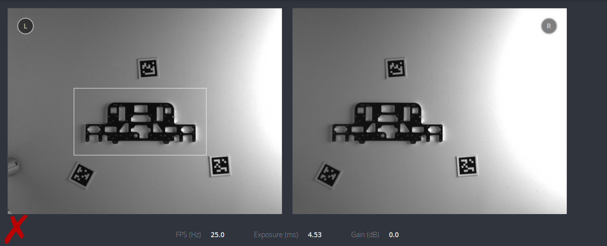

Template generation¶
The SilhouetteMatch module requires special object templates for each type of object to be detected. Roboception offers a template generation service on their website, where the user can request these object templates. Alternatively, if you have a DXF file of your object, you can directly create the template on the rc_visard, see DXF File.
This tutorial shows how to gather the data required to request and generate a new object template.
Note
Object templates for simple shapes such as rectangles, circles and hexagons, can be directly generated by the user using the scripts and instructions provided on Roboception’s GitHub page.
Obtaining the object model¶
DXF file¶
If you have a DXF drawing of your object, you can create the template directly on the rc_visard. To do so, open the Web GUI and navigate to .
At the bottom of the page, you’ll find a list of currently installed templates.

Fig. 24 List of available SilhouetteMatch templates
To create a new template from a given DXF file, press the “+” button. A window will open, allowing you to upload and configure a DXF file.
{kind=link}
Note
Currently, only DXF files consisting of a single layer are allowed.
For the “Object Height” parameter, please see Measuring the object height. The created template can then be used for detections.
CAD model¶
Sending the CAD model of the part is the easiest and most straightforward way of providing the object model. The model does not have to include any information about inner parts, texture or material. A 2D model of the object could also be used, as long as all edges that should be used for matching are visible.
Note
The origin of the generated template is based on the reference frame of the model.
{kind=link}
With the rc_visard¶
If the CAD model of the object is not available or it cannot be sent, it is also possible to generate a template based on data captured with an rc_visard.
{kind=link}
The procedure for recording the required data consists of the following steps:
Place the object on a flat, monochrome surface in contrasting color.
Place 3 AprilTags on the surface to form a triangle around the object. A sample background with AprilTags can be downloaded here.
Connect the rc_visard to your PC and open the Camera page in the Web GUI.
Place the rc_visard perpendicular to the flat surface on which the object lies. The recommended distance of the rc_visard to the surface depends on the rc_visard model:
- approximately 300 mm for rc_visard 65
- approximately 500 mm for rc_visard 160
Note
The object should be visible in both the left and right camera images. The distance should be increased if the object is not fully visible at the recommended distance.
In the Camera page, select an Exposure region around the object and check the illumination of the scene. To get the best result, the gain of the rc_visard should be 0 dB (see Exposure and Gain Settings) and the object should not cast any significant shadow.
Fig. 28 Sample scene with proper lighting conditions. The gain value is 0 dB and there are no shadows on the object and its vicinity.
Fig. 30 Sample scene with too strong direct light. The object casts shadows.
{kind=link}
{kind=link}
{kind=link}
All the data necessary for the template generation can be downloaded through the Web GUI in the Camera page by clicking on the camera button below the images.
Measuring the object height¶
The object height is the distance from the bottom of the object to the plane on which most of the edges that can be used for matching are lying. This is not always the highest point! It is crucial to measure this value correctly. The returned pose of the detected object depends on this value.
{kind=link}
Is the object orientation needed?¶
For some objects it is possible to create a simplified template that will be detected faster. This is possible only if the object rotation on the plane is not required for grasping and placing. Sample images of such objects can be found below.
{kind=link}
{kind=link}
Recording the scene¶
The final step is to record images of the object in the actual environment in which the object needs to be detected. Roboception will use these images to test the generated template and, if necessary, suggest changes to improve the detection performance.
For recording the scene, 3 AprilTags should be placed in the field of view of both cameras. If a rc_randomdot projector is available, the plane calibration can also be performed using depth data. In this case, the rc_randomdot projector should be setup as described in the Obtain dense depth images with the rc_randomdot projector tutorial and the Out 1 mode of the rc_visard should be set to ExposureAlternateActive.
{kind=link}
Fig. 34 Sample recorded scene with 3 AprilTags.
With the rc_visard¶
Use the Download snapshot button in the Camera page of the Web GUI.
Without the rc_visard¶
Note
It is possible to test the template detection only on images recorded with the rc_visard. If another camera is used, Roboception will only be able to check the scene and give some general remarks about background and illumination.
If the rc_visard can not be used to capture the data, it is also possible to use any other camera. In order to capture the most valuable data, the camera should be placed in the same position where the rc_visard will be mounted during production. The picture has to be sharp and taken without using the flash, as this alters the normal lighting conditions. If it is not possible to take a sharp picture without a flash, it is strongly recommended to add an additional external light source.